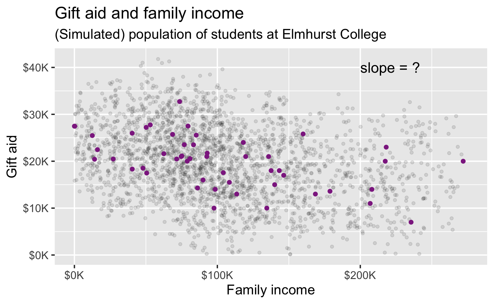
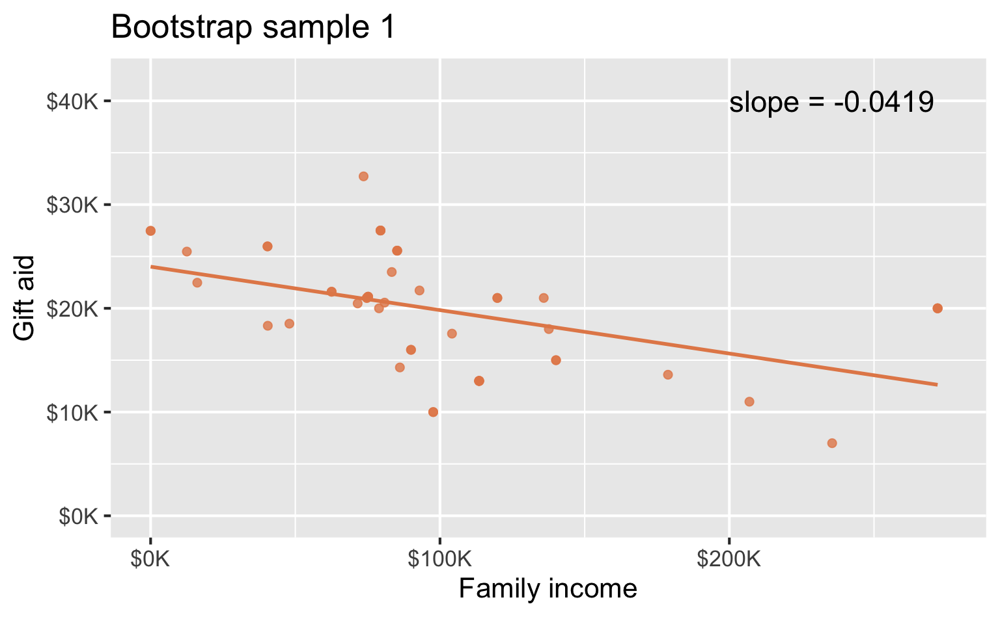
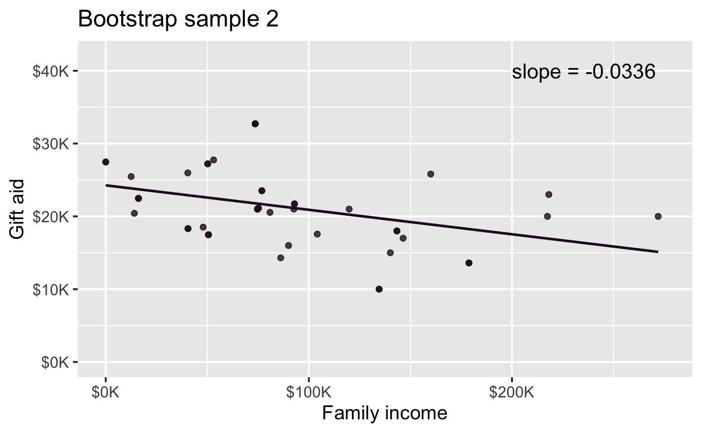
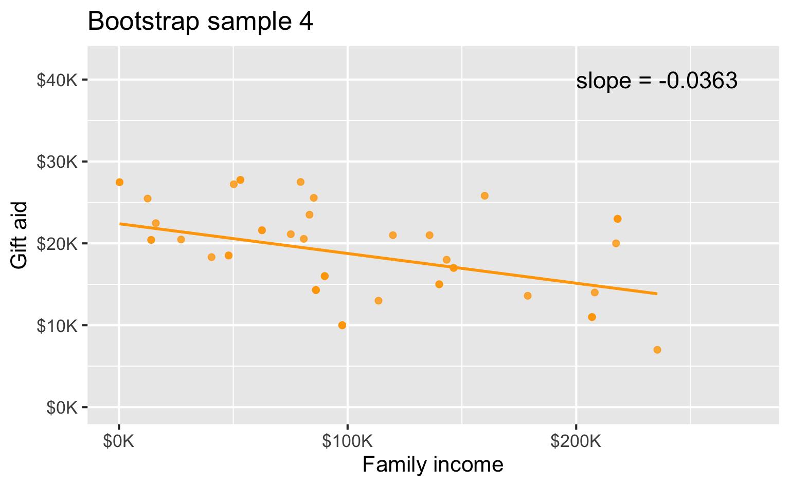
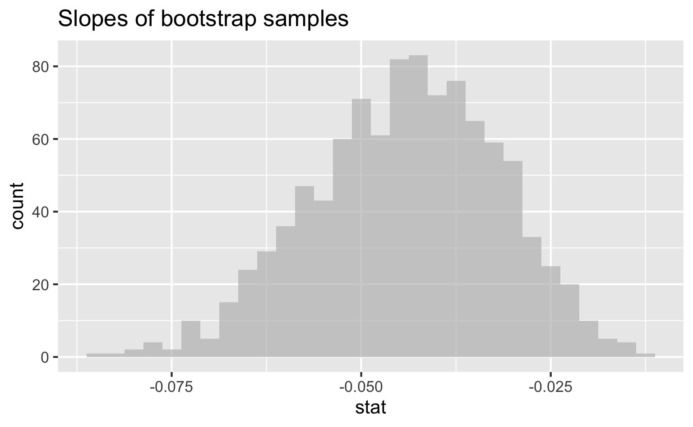

Quantifying uncertainty
Modeling and inference
Setup
Packages
- tidyverse for data wrangling and visualization
- scales for better axis labels
- tidymodels for modeling
- openintro for data
Data
- Family income and gift aid data from a random sample of fifty students in the freshman class of Elmhurst College in Illinois, USA
- Gift aid is financial aid that doesn’t need to be paid back, unlike loans
Linear model

Interpreting the slope
# A tibble: 2 × 5
term estimate std.error statistic p.value
<chr> <dbl> <dbl> <dbl> <dbl>
1 (Intercept) 24.3 1.29 18.8 8.28e-24
2 family_income -0.0431 0.0108 -3.98 2.29e- 4For each additional $1,000 of family income, we would expect students to receive a net difference of 1,000 * (-0.0431) = -$43.10 in aid on average, i.e. $43.10 less in gift aid, on average.
exactly $43.10 for all students at this school?!
Inference
Statistical inference
- Statistical inference provides methods and tools so we can use the single observed sample to make valid statements (inferences) about the population it comes from.
- For our inferences to be valid, the sample should be random and representative of the population we’re interested in.

Estimation
So far we have done lots of estimation (mean, median, slope, etc.), i.e. - used data from samples to calculate sample statistics - which can then be used as estimates for population parameters
Spear or net?
If you want to catch a fish, do you prefer a spear or a net?


Interval or point?
If you want to estimate a population parameter, do you prefer to report a range of values the parameter might be in, or a single value?
- If we report a point estimate, we probably won’t hit the exact population parameter
- If we report a range of plausible values we have a good shot at capturing the parameter
Confidence intervals
Confidence intervals
A plausible range of values for the population parameter is a confidence interval.
In order to construct a confidence interval we need to quantify the variability of our sample statistic
For example, if we want to construct a confidence interval for a population slope, we need to come up with a plausible range of values around our observed sample slope
This range will depend on how precise and how accurate our sample mean is as an estimate of the population mean
Quantifying this requires a measurement of how much we would expect the sample statistic to vary from sample to sample
Sample to sample…
Suppose we split a classroom in half down the middle of the classroom and ask each student their heights. Then, we calculate the mean height of students on each side of the classroom. Would you expect these two means to be exactly equal, close but not equal, or wildly different?
Suppose you randomly sample 50 students and 5 of them are left handed. If you were to take another random sample of 50 students, how many would you expect to be left handed? Would you be surprised if only 3 of them were left handed? Would you be surprised if 40 of them were left handed?
Quantifying the variability of sample statistics
We can quantify the variability of sample statistics using
- simulation: via bootstrapping (in this course)
or
- theory: via Central Limit Theorem (in future stat courses!)
# A tibble: 2 × 5
term estimate std.error statistic p.value
<chr> <dbl> <dbl> <dbl> <dbl>
1 (Intercept) 24.3 1.29 18.8 8.28e-24
2 family_income -0.0431 0.0108 -3.98 2.29e- 4Bootstrapping
Bootstrapping
- “pulling oneself up by one’s bootstraps”: accomplishing an impossible task without any outside help
- Impossible task: estimating a population parameter using data from only the given sample
- Note: Notion of saying something about a population parameter using only information from an observed sample is the crux of statistical inference
ü•æ
Observed sample
Bootstrap population
Generated assuming there are more students like the ones in the observed sample…

Bootstrapping scheme
Take a bootstrap sample - a random sample taken with replacement from the original sample, of the same size as the original sample
Calculate the bootstrap statistic - a statistic such as mean, median, proportion, slope, etc. computed on the bootstrap samples
Repeat steps (1) and (2) many times to create a bootstrap distribution - a distribution of bootstrap statistics
Calculate the bounds of the XX% confidence interval as the middle XX% of the bootstrap distribution
Bootstrap sample 1

Bootstrap sample 2

Bootstrap sample 3
Bootstrap sample 4

Bootstrap samples 1 - 4
we could keep going…
Many many samples…

Slopes of bootstrap samples

95% confidence interval
Interpreting the slope, take two
# A tibble: 1 × 2
lower_ci upper_ci
<dbl> <dbl>
1 -0.0684 -0.0222We are 95% confident that for each additional $1,000 of family income, we would expect students to receive $68.41 to $22.23 less in gift aid, on average.